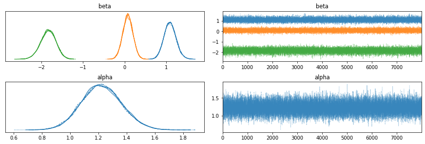
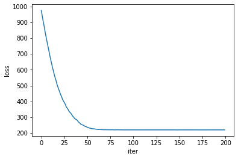
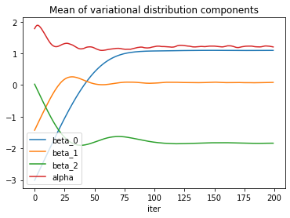
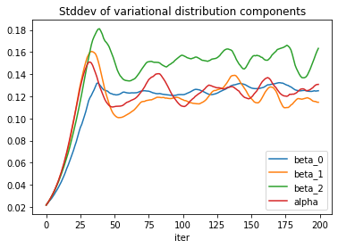
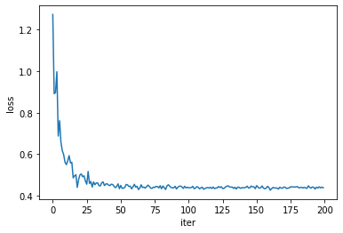
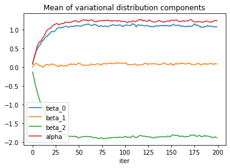
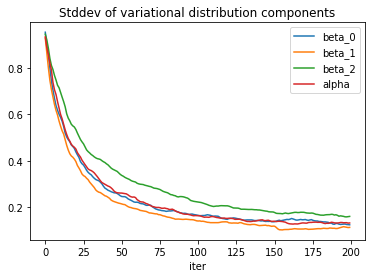

true_params = np.array([1., 0., -2.])
true_offset = 1.
true_generating_process = tfd.JointDistributionSequentialAutoBatched([
# features
tfd.Sample(tfd.Normal(loc=0., scale=1.), true_params.shape[0]),
# observations
lambda features: tfd.Bernoulli(logits=true_offset +
tf.tensordot(features,
tf.convert_to_tensor(
true_params,
dtype=tf.float32),
axes=1))
])
[X, y] = true_generating_process.sample(500)If you plan to automate the execution of multible Bayesian inference jobs, typically to regularly update your posterior distribution as new data comes in, you might find that MCMC algorithms take too long to sample their chains. Variational inference can speed things up considerably (you can find a good introduction here), at the expense of converging only to an approximation of the true posterior, which is often good enough for practical applications.
Lately, I have been experimenting with TensorFlow-Probability that implement automatic differentiation variational inference, namely tfp.vi.fit_surrogate_posterior and tfp.layers, to see how to integrate them into some of my projects.
I collected insights from various guides, tutorials, and code documentation, that I am summarizing here, mainly for future reference, but also for the benefit of people I will manage to convert to Bayesianism. The code is applied to a toy example of Bayesian logistic regression on simulated data, because it is helpful in this context to compare results to the true parameters of the data generating process.
MCMC
It is always good to start with a benchmark, so I collected an MCMC sample of the posterior distribution and computed the means and standard deviations of the model parameters.
# Specify the model for Bayesian logistic regression.
mdl_logreg = tfd.JointDistributionSequentialAutoBatched([
#betas
tfd.Sample(tfd.Normal(loc=0., scale=5.), X.shape[1]),
#alpha
tfd.Normal(loc=0., scale=20.),
#observations
lambda alpha, betas: tfd.Independent(
tfd.Bernoulli(logits=alpha + tf.tensordot(X, betas, axes=1)),
reinterpreted_batch_ndims=1)
])
# Specify the MCMC algorithm.
dtype = tf.dtypes.float32
nchain = 5
b0, a0, _ = mdl_logreg.sample(nchain)
init_state = [b0, a0]
step_size = [tf.cast(i, dtype=dtype) for i in [.1, .1]]
target_log_prob_fn = lambda *init_state: mdl_logreg.log_prob(
list(init_state) + [y])
# bijector to map contrained parameters to real
unconstraining_bijectors = [
tfb.Identity(),
tfb.Identity(),
]
@tf.function(autograph=False, experimental_compile=True)
def run_chain(init_state, step_size, target_log_prob_fn, unconstraining_bijectors,
num_steps=8000, burnin=1000):
def trace_fn(_, pkr):
return (
pkr.inner_results.inner_results.target_log_prob,
pkr.inner_results.inner_results.leapfrogs_taken,
pkr.inner_results.inner_results.has_divergence,
pkr.inner_results.inner_results.energy,
pkr.inner_results.inner_results.log_accept_ratio
)
kernel = tfp.mcmc.TransformedTransitionKernel(
inner_kernel=tfp.mcmc.NoUTurnSampler(
target_log_prob_fn,
step_size=step_size),
bijector=unconstraining_bijectors)
hmc = tfp.mcmc.DualAveragingStepSizeAdaptation(
inner_kernel=kernel,
num_adaptation_steps=burnin,
step_size_setter_fn=lambda pkr, new_step_size: pkr._replace(
inner_results=pkr.inner_results._replace(step_size=new_step_size)),
step_size_getter_fn=lambda pkr: pkr.inner_results.step_size,
log_accept_prob_getter_fn=lambda pkr: pkr.inner_results.log_accept_ratio
)
chain_state, sampler_stat = tfp.mcmc.sample_chain(
num_results=num_steps,
num_burnin_steps=burnin,
current_state=init_state,
kernel=hmc,
trace_fn=trace_fn)
return chain_state, sampler_stat
# Run the chain
samples, sampler_stat = run_chain(
init_state, step_size, target_log_prob_fn, unconstraining_bijectors)
# using the pymc3 naming convention
sample_stats_name = ['lp', 'tree_size', 'diverging', 'energy', 'mean_tree_accept']
sample_stats = {k:v.numpy().T for k, v in zip(sample_stats_name, sampler_stat)}
sample_stats['tree_size'] = np.diff(sample_stats['tree_size'], axis=1)
var_name = ['beta', 'alpha']
posterior = {k:np.swapaxes(v.numpy(), 1, 0)
for k, v in zip(var_name, samples)}
az_trace = az.from_dict(posterior=posterior, sample_stats=sample_stats)
az.plot_trace(az_trace)
plt.show()
Variational inference with tfp.vi
The dedicated tool for variational inference in TensorFlow-Probability, tfp.vi.fit_surrogate_posterior, requires a similar amount of preparatory work as tfp.mcmc algorithms. The specification of the target posterior is actually the same.
mdl_logreg = tfd.JointDistributionSequentialAutoBatched([
#betas
tfd.Sample(tfd.Normal(loc=0., scale=5.), X.shape[1]),
#offset
tfd.Normal(loc=0., scale=20.),
#observations
lambda offset, betas: tfd.Independent(
tfd.Bernoulli(logits=offset + tf.tensordot(X, betas, axes=1)),
reinterpreted_batch_ndims=1)
])
unnormalized_log_prob = lambda *x: mdl_logreg.log_prob(x + (y,))Then, instead of specifying a Markov chain, we have to define a variational family of surrogate posterior candidates. This can require quite a bit of work, but if our model has been built with a joint distribution list and we are happy with a mean field approximation (this is usually the case if we care only about the marginal posterior distributions of the individual model parameters and not their correlation), the TensorFlow tutorial on modeling with joint distributions provides a helper function to do that. Note that if the support of the distributions is not a full \(\mathbb{R}^n\), we have to implement unconstraining bijectors. The same tutorial shows how to do it.
# Build meanfield ADVI for a jointdistribution
# Inspect the input jointdistribution and replace the list of distribution with
# a list of Normal distribution, each with the same shape.
def build_meanfield_advi(jd_list, observed_node=-1):
"""
The inputted jointdistribution needs to be a batch version
"""
# Sample to get a list of Tensors
list_of_values = jd_list.sample(1) # <== sample([]) might not work
# Remove the observed node
list_of_values.pop(observed_node)
# Iterate the list of Tensor to a build a list of Normal distribution (i.e.,
# the Variational posterior)
distlist = []
for i, value in enumerate(list_of_values):
dtype = value.dtype
rv_shape = value[0].shape
loc = tf.Variable(
tf.random.normal(rv_shape, dtype=dtype),
name='meanfield_%s_mu' % i,
dtype=dtype)
scale = tfp.util.TransformedVariable(
tf.fill(rv_shape, value=tf.constant(0.02, dtype)),
tfb.Softplus(),
name='meanfield_%s_scale' % i,
)
approx_node = tfd.Normal(loc=loc, scale=scale)
if loc.shape == ():
distlist.append(approx_node)
else:
distlist.append(
# TODO: make the reinterpreted_batch_ndims more flexible (for
# minibatch etc)
tfd.Independent(approx_node, reinterpreted_batch_ndims=1)
)
# pass list to JointDistribution to initiate the meanfield advi
meanfield_advi = tfd.JointDistributionSequential(distlist)
return meanfield_adviIt remains to choose an optimizer and set a few hyperparameters such as the number of optimization steps, the sample size used to estimate the loss function, and the learning rate of the optimizer. To better tune those and then to assess convergence, it can be helpful to enrich the trace function with statistics of the variational distribution.
meanfield_advi = build_meanfield_advi(mdl_logreg, observed_node=-1)
# Check the logp and logq
advi_samples = meanfield_advi.sample(4)
print([
meanfield_advi.log_prob(advi_samples),
unnormalized_log_prob(*advi_samples)
])
# Specify a trace function that collects statistics during inference and an optimizer
trace_fn = lambda x: (x.loss, meanfield_advi.mean(), meanfield_advi.stddev())
opt = tf.optimizers.Adam(learning_rate=.08)
#@tf.function(experimental_compile=True)
def run_approximation():
loss_ = tfp.vi.fit_surrogate_posterior(
unnormalized_log_prob,
surrogate_posterior=meanfield_advi,
optimizer=opt,
sample_size=50,
num_steps=200,
trace_fn=trace_fn
)
return loss_
loss_, q_mean_, q_std_ = run_approximation()
The loss itself is obviously a good indicator of convergence, but the model parameters seem to need a few more iterations to reach a steady state of the optimizer.

The standard deviation estimates exhibit some more noise.

To reduce the noise, one can try to increase the sample size used to estimate the loss function, or decrease the learning rate. The price for both actions is a slower convergence, so the number of iterations would need to be adjusted accordingly. Implementing a learning rate schedule could offer a trade-off.
Variational inference with tfp.layers
If the model can be cast as a neural network with a prior distribution on the neuron parameters, chances are it can be expressed as a Keras model with dedicated tfp.layers, a TensorFlow tool for probabilistic machine learning.
The probabilistic layers tutorial covers a least squares regression example in details and was a good inspiration, especially the case 4: aleatoric & epistemic uncertainty. The biggest difference is in the specification of the prior, to which they assign learnable parameters.
To understand how to build a probabilistic machine learning model, we can start with the neural network expression of the logistic regression, namely a single neuron with a sigmoid activation, and “probabilize” it.
tfk = tf.keras
classical_model = tf.keras.Sequential([
tfk.layers.Dense(1),
tfk.layers.Activation('sigmoid')
])
classical_model.compile(optimizer=tf.optimizers.Adam(learning_rate=0.01),
loss=tfk.losses.BinaryCrossentropy()
)
classical_model.fit(X, y, epochs=50)The output of this network is the probability parameter of a Bernoulli distribution that is fit to the observed data through minimization of the binary cross-entropy. The activation layer can be replaced with a tfp.layers.DistributionLambda layer that outputs a tfd.Bernoulli distribution directly, which can be fit through minimization of the negative log-likelihood (note that the activation can be skipped if we use the logit parameter).
The parameters of the logistic regression are encoded in the tfk.layers.Dense layer. Its probabilistic version, tfp.layers.DenseVariational, also specifies a prior distribution for these parameters as well as a variational family to estimate their posterior.
# Define the negative log likelihood loss function for the `DistributionLambda`
# head of the model.
negloglik = lambda y, rv_y: -rv_y.log_prob(y)
# Define a function to constrain the scale parameters to the real positive
def constrain_scale(x):
c = np.log(np.expm1(1.))
return 1e-5 + tf.nn.softplus(c + x)
# Specify the surrogate posterior over `keras.layers.Dense` `kernel` and `bias`.
def posterior_mean_field(kernel_size, bias_size, dtype=None):
n = kernel_size + bias_size
return tf.keras.Sequential([
tfp.layers.VariableLayer(2 * n, dtype=dtype),
tfp.layers.DistributionLambda(lambda t: tfd.Independent(
tfd.Normal(loc=t[..., :n],
scale=constrain_scale(t[..., n:])
#scale=1e-5 + tf.nn.softplus(c + t[..., n:])),
),
reinterpreted_batch_ndims=1)),
])
# Specify the prior over `keras.layers.Dense` `kernel` and `bias`.
def prior_ridge(kernel_size, bias_size, dtype=None):
return lambda _: tfd.Independent(
tfd.Normal(loc=tf.zeros(kernel_size + bias_size),
scale=tf.concat([5*tf.ones(kernel_size),
20*tf.ones(bias_size)],
axis=0)),
reinterpreted_batch_ndims=1
)
# Specify the model
probabilistic_model = tf.keras.Sequential([
tfp.layers.DenseVariational(units=1,
make_posterior_fn=posterior_mean_field,
make_prior_fn=prior_ridge,
kl_weight=1/X.shape[0]
),
tfp.layers.DistributionLambda(lambda t: tfd.Bernoulli(logits=t)),
])To understand the kl_weight argument of tfp.layers.DenseVariational, we need to take a look at the mathematics behind variational inference that has been so far left out of this discussion. To estimate the posterior distribution \(P(Z\vert X)\) of the parameters \(Z\) given the data \(X\), the variational inference algorithms implemented here look for the distribution \(Q(Z)\) in the variational family that minimizes the Kullback-Leibler divergence
\[ D_{\mathrm{KL}}(Q \Vert P) = \mathbb{E}_Q\left[ \log \frac{Q(Z)}{P(Z\vert X)} \right] \]
of \(P(Z\vert X)\) from \(Q(Z)\). This quantity still depends on the unknown posterior \(P(Z\vert X)\), but minimizing it is equivalent to maximizing the evidence lower bound
\[ \mathrm{ELBO} = \mathbb{E}_Q\left[ \log P(X \vert Z) + \log P(Z) - \log Q(Z) \right] \]
which depends only on the likelihood, the prior, and the variational distributions.
We prefer minimization problems, so we consider the negative ELBO loss function, and we make the dependency on individual data points explicit,
\[ - \mathrm{ELBO} = \mathbb{E}_Q\left[ \sum_i \left( - \log P(X_i \vert Z) + \frac{1}{N}( \log Q(Z) - \log P(Z))\right) \right] \]
where \(N\) is the number of data points. The first term in the sum corresponds to the negative log-likelihood passed as the loss argument to probabilistic_model.compile. The rest of the sum is a regularization implemented in tfp.layers.DenseVariational, where \(Q(Z)\) corresponds to the make_posterior_fn argument, \(P(Z)\) to make_prior_fn, and \(N\) to kl_weight=1/X.shape[0].
As a side note, the sample size argument in tfp.vi.fit_surrogate_posterior gives the number of points sampled from \(Q\) to compute a Monte Carlo estimate of the gradient of the ELBO.
With the Keras API, we can use callbacks to collect training statistics or implement early stopping policies, and we have access to the tf.data.Dataset API for batch training (kl_weight would need to be adapted accordingly). Here we use callbacks to record the parameters of the variational distribution during training.
def get_model_stats(probabilistic_model):
weights = probabilistic_model.layers[0].weights[0]
k = X.shape[1]
locs = weights[:k+1].numpy()
scales = constrain_scale(weights[k+1:]).numpy()
return locs, scales
params_history = []
params_callback = tfk.callbacks.LambdaCallback(
on_epoch_end=lambda epoch, logs: params_history.append(
np.array(get_model_stats(probabilistic_model))))
probabilistic_model.compile(optimizer=tf.optimizers.Adam(learning_rate=0.01),
loss=negloglik
)
history = probabilistic_model.fit(X, y,
epochs=200,
callbacks=[params_callback])


Convergence of the standard deviation parameters is a bit slow but could be improved with a more informed choice of starting values.
Conclusion
The means and standard deviations of the posterior distributions inferred with tfp.mcmc, tfp.vi and tfp.layers (bnn) are summarized in the following table.
| true_value | mcmc_mean | mcmc_std | vi_mean | vi_std | bnn_mean | bnn_std | |
|---|---|---|---|---|---|---|---|
| parameter | |||||||
| beta_0 | 1.000 | 1.095 | 0.145 | 1.094 | 0.125 | 1.108 | 0.115 |
| beta_1 | 0.000 | 0.079 | 0.122 | 0.084 | 0.115 | 0.055 | 0.120 |
| beta_2 | -2.000 | -1.840 | 0.184 | -1.838 | 0.163 | -1.835 | 0.146 |
| alpha | 1.000 | 1.223 | 0.142 | 1.203 | 0.131 | 1.218 | 0.124 |
The results are very similar across the three methods. Convergence is quite faster with variational inference, but it requires a bit more work to specify sensible variational families.
While tfp.vi is applicable to a wider class of problems, tfp.layers gives access to Keras functionalities such as callbacks, and, more interestingly, batch training with the tf.data.Dataset API.
There is no definitive rule for which method to apply to which problem, but it is important to be aware of the limitations and benefits of variational inference algorithms before using them. In this example we knew the true parameters in advance, but in real applications, one should have validation procedures in place to ensure the variational family is large enough to capture the phenomenon of interest, for instance by comparison with MCMC results, or for prediction tasks with a test set where the labels/outcomes are known.